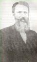
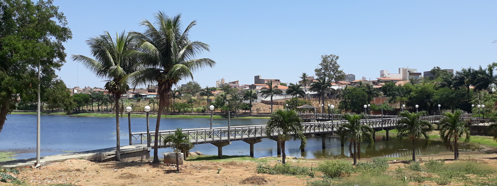
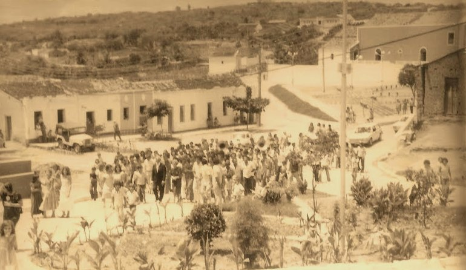
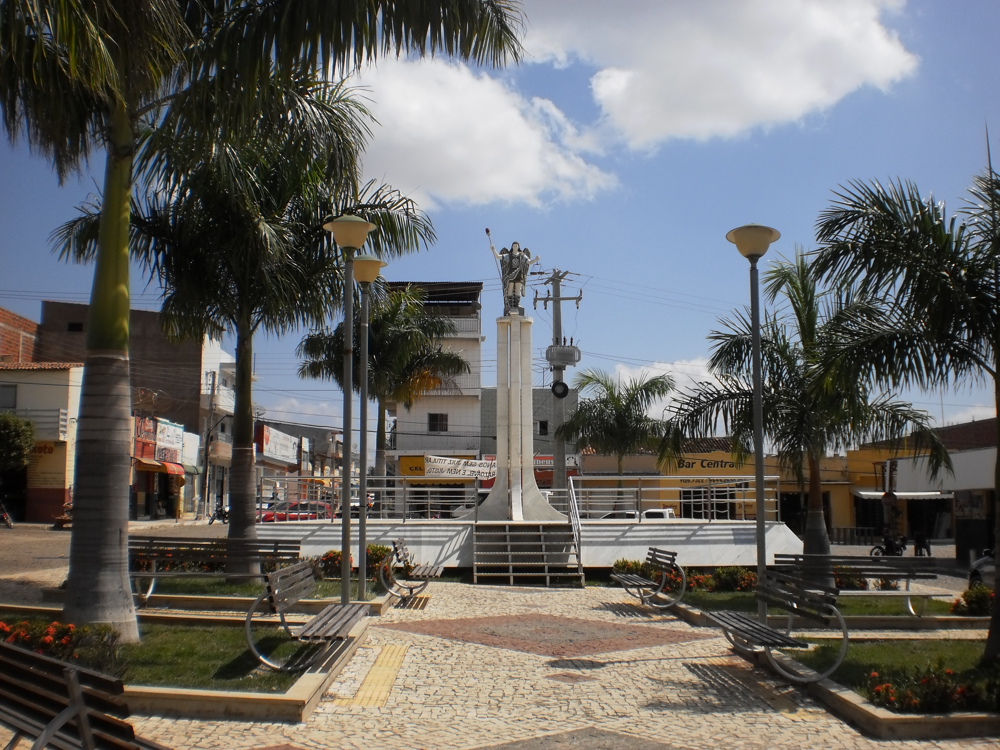
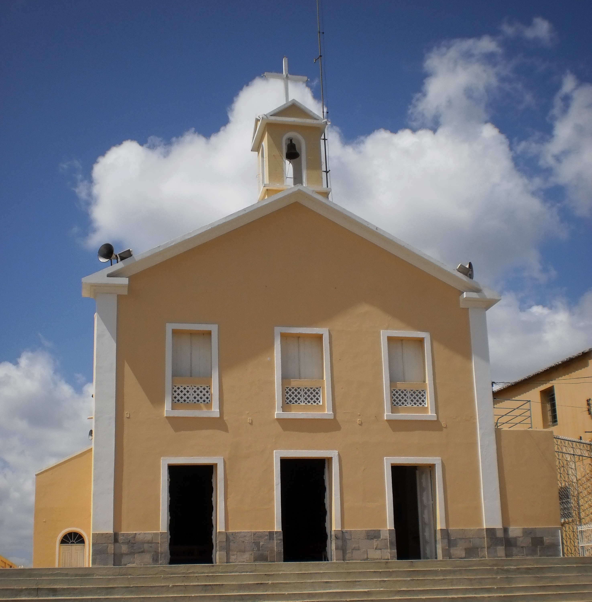
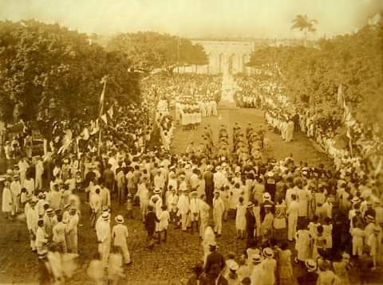

São Miguel
História e Nostalgia - Uma Jornada através do tempo e dos lugares que contam sua história
História e Nostalgia - Uma Jornada através do tempo e dos lugares que contam sua história

Na metade do século XVIII, quando o Brasil ainda era colônia de Portugal, Manoel José de Carvalho veio de Icó, Ceará, à procura de novas terras que pudessem ser povoadas e dessem melhores condições de sobrevivência. Chegando à zona serrana do Rio Grande do Norte, ele encontrou uma vegetação diversificada, dando à região uma beleza singular.
Durante a caminhada, muitos lugares foram registrados, alguns desses dados por ele, que permaneceram até hoje com o mesmo nome no registro histórico, como as lagoas dos Cedros, dos Mil Homens, São João. Manoel ficou deslumbrado durante sua trajetória na região devido ao clima agradável e às belezas da região, e afirmou:
"Estamos na Lagoa de São Miguel, aqui ficarei e um povoado se construirá ao redor de onde estamos"

Parque da Lagoa de São Miguel - Fonte: Wikipédia
O nascimento da vila ocorrera em 29 de setembro de 1750, no dia em que era comemorado o dia de São Miguel Arcanjo. Após a fundação do pequeno povoado, este começou a crescer, devido principalmente à vinda de pessoas de outros lugares para São Miguel.

Vila de São Miguel - Fonte: Tok de História

Estátua de São Miguel Arcanjo - Fonte: Wikipédia
A base econômica do povoado começou a se desenvolver principalmente na agropecuária, mas em um processo que ocorreu lenta e gradativamente. Inicialmente subordinado a Portalegre, o povoado de São Miguel passou a pertencer a Pau dos Ferros após a emancipação deste, em 1856. Naquela época, só existiam, na região do oeste potiguar, apenas três povoados (Apodi, Portalegre e Pau dos Ferros), sendo que outros dois começavam a se destacar, sendo São Miguel um deles (o outro era Luís Gomes), mas seu crescimento era mais dificultado devido à sua localização em serra.
Em 9 de setembro de 1875, por meio da lei provincial n° 775, São Miguel é elevado à categoria de vila e, ao mesmo tempo, era criada a freguesia de São Miguel. Em 11 de dezembro de 1876, a vila é desmembrada de Pau dos Ferros e São Miguel torna-se um novo município do Rio Grande do Norte. A instalação oficial do município e da freguesia, que se tornara paróquia, ocorreu em 29 de junho de 1883. A nova paróquia teve como primeiro pároco o Pe. Cosme Leite da Silva, que exerceu a função até sua morte, em 1909.

Paróquia de São Miguel - Fonte: Wikipédia
Em 1911, o nome do município fora alterado de São Miguel do Pau dos Ferros. Tal alteração permaneceu até 1938, quando, por meio do decreto de lei estadual n° 474, em 26 de abril de 1938, o município volta ao seu nome original.

Inauguração da praça 7 de Setembro - Fonte: Brechando
Em 1950, ano do bicentenário da fundação de São Miguel, a cidade ganha uma estátua em honra ao seu padroeiro, que foi inaugurada em 17 de agosto no meio da Praça 7 de Setembro. Em 1953, através de leis estaduais, o município passou a ser constituído pela sede e mais dois distritos: Coronel João Pessoa e Doutor Severiano, ambos desmembrados na década de 1960 e elevados à categoria de município. Em 1963, foi criado o distrito de Padre Cosme, atual município de Venha-Ver, emancipado em 1992. Desde então São Miguel permanece com a mesma divisão territorial.